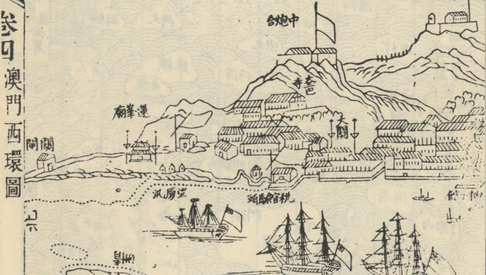

概述

1849年3月13日澳門總督亞馬留率兵驅逐清朝戶部駐澳門關部行臺官員，釘閉該建築物，推倒關前懸挂關部標誌之旗杆。這是標誌澳葡以行動佔領澳門的重大歷史事件，之後澳葡政府一直將明清政府在澳門城內曾存在的任何建築進行消滅及淡化，以強化其殖民管治。
目前這個重要的文化遺產：關部行臺遺址(可能是中國現存唯一的關部行臺遺址)，被負責澳門文化遺產保護的官員說：沒有價值！很可能被摧毀。
附上可以證明顯榮里地段確實是關部行臺的歷史地圖，供各位參考。圖1, 2 為1827年澳門圖，圖3(1838年葡人實測圖)中清楚標示 s 為 Alfandega Chinez(中國海關)
參考
另外，之前也有研究文章可參考：
http://www.icm.gov.mo/rc/viewer/10094/2447澳門唐人廟考
推廣
北灣的粵海關監督行臺，p.161-164; 《明清澳門城市建築研究》，邢榮發，2007